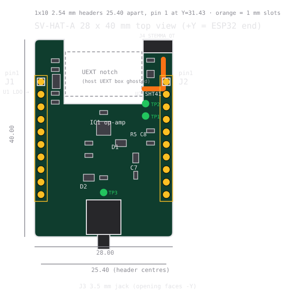
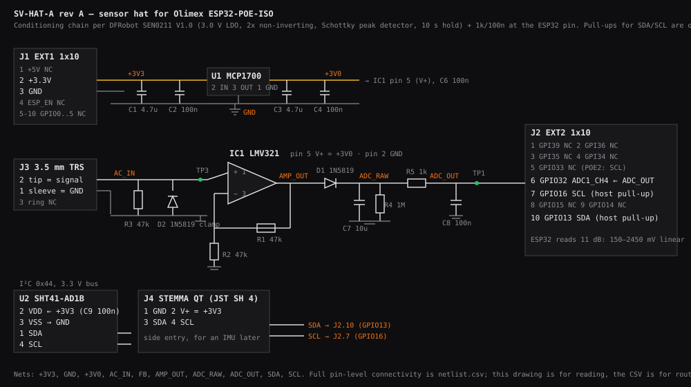

One PoE cable, one clamp, nothing soldered.
An Olimex ESP32-POE-ISO powered and networked by the LS108GP switch, the DFRobot SEN0211 current clamp you already own on three jumper wires, an SHT41 on four more. The SV-HAT-A hat turns the jumpers into a plug-on board. Everything below is to scale from the Olimex drawings and the parts' datasheets; the text files next to this page are what a vendor builds from.
Needed from you
Everything a session cannot do: decisions, purchases, hands on the bench, and accounts. In the order they block.
Decide blocks firmware
- Current register full scale: keep 6 A or go to 20 A?
- Power threshold for kit devices: 1000 mA?
- Calibration gain: compile-time env or NVS?
- Which scope to RFQ: hat (B) only, or hat + integrated node (C)?
Buy ~$30 + optional meter
- Adafruit 5776 SHT41 STEMMA QT, $5.95
- Adafruit 4397 JST SH → female sockets, $0.95
- Klein 69409 line splitter, $19.99 at Lowe's
- True-RMS clamp meter if none on the bench
- For the hat build: nothing yet
Bench hands required
- Wire the SEN0211 to the POE-ISO
- Confirm the module reaches 2.45 V on a 3.3 V supply
- Clamp a known load and calibrate once
- Measure the SEN0211 module's own draw
- Cable-pull fault test and a 24 h soak
- Record which board is on which switch port
- Check the SJ1-3523N jack pin numbering against your SEN0211 plug
Admin vendor-facing
- Fill the bracketed parts of the RFQ cover email
- Send to three shops and take two calls
- Open DigiKey/Mouser in a browser and confirm eight part numbers
- Optionally install KiCad
- Sign the PO and the 50/50 NRE terms
The kit at a glance
Parts
| Part | Role | Status | Unit |
|---|---|---|---|
| Olimex ESP32-POE-ISO | MCU, PoE PD, Ethernet, rails | have ×4 | $28–29 |
| DFRobot SEN0211 20 A clamp kit | current (mA) | have | $19.90 |
| Adafruit 5776 SHT41 | temp_c, humidity_pct | buy | $5.95 |
| Adafruit 4397 cable | SHT41 → UEXT pins | buy | $0.95 |
| F/F jumpers ×3 | clamp module → EXT headers | have | $3.95/40 |
| Cat5e + LS108GP port | power and data | have | — |
| Klein 69409 splitter | clamp a corded load | optional | $19.99 |
Why these
2D layout
Top view of the POE-ISO with the hat fitted, to scale (1 px = 1 unit of mm after scaling). Feature positions are from the Olimex pinout drawing and the 98 × 28 mm outline; the hat geometry is from hat/placement.csv.


3D stack
Drag to orbit, scroll to zoom. Exploded view lifts the hat off the headers. Geometry is the same millimetre data as the drawings above; it is a layout model, not a rendering of a specific revision.
Signal chain and limits

What the ESP32 can actually read
| Point | Volts | Amps | Meaning |
|---|---|---|---|
| ADC floor (11 dB) | 150 mV | 1.06 A | below this: noise, report 0 |
| Register full scale | 849 mV | 6.0 A | current levels byte pins here |
| ADC linear top | 2450 mV | 17.3 A | compresses above |
| Module max out | 2.8 V | 19.8 A | probe range end |
| Hold decay | τ = 10 s | — | ~30 s to read 0 after switch-off |
Plan, cost and time
| # | Step | Your time | Cash | Calendar |
|---|---|---|---|---|
| 0 | Order the missing kit parts | 30 min | $30 (+$20 splitter, +$100–210 meter) | 2–5 days |
| 1 | Jumper-wire bring-up, HARDWARE.md §8 | 1–2 days + 24 h soak | $0 | 1–2 weeks |
| 2 | Pick the scope, finish the RFQ | 1–2 h | $0 | 1 day |
| 3 | Quotes from three shops | 3–5 h | $0 | 5–10 business days |
| 4B | Hat layout: in-house KiCad or Sierra design stage | 2–3 h review | $0 / $1,500–4,000 | 1–2 weeks |
| 5B | Hat build ×5 (CircuitHub / Sierra turnkey) | 1 h | $400–1,000 | 1–2 weeks |
| 6B | Hat bring-up and acceptance | 1 day | $0 | 1 week |
| 4C | Integrated node design, two review gates | 6–10 h | $8,000–20,000 | 4–8 weeks |
| 5C | Node build ×10 turnkey | 1–2 h | $1,500–4,000 | 2–4 weeks |
| 6C | Node bring-up, one respin reserve | 2–3 days | $1,500–5,000 | 2–4 weeks |
| 7 | Compliance, only if selling (FCC 15B pre-scan) | 1 day | $2,000–5,000 (full: $8–20k) | 2–4 weeks |
Files
| File | What | Consumer |
|---|---|---|
| HARDWARE.md | Dev kit spec, pin budget, wiring, ADC analysis, bring-up checklist, open decisions | you |
| bom-devkit.csv | Cart-ready kit BOM with vendor part numbers, prices, stock, verification status | you, purchasing |
| SOURCING.md | Vendors, US design/build shops, scopes, licence, per-step estimates | you |
| RFQ-prototype.md | Vendor package: scope, fixed pin map, spec, deliverables, acceptance tests, cover email | design/build shop |
| hat/DESIGN.md | SV-HAT-A design notes, layout rules, test procedure, verified pinouts | layout engineer, assembler |
| hat/schematic.svg · netlist.csv | Schematic drawing and the pin-level netlist it is drawn from | layout engineer |
| hat/bom.csv | 22-placement BOM with manufacturer part numbers and alternates | turnkey assembly |
| hat/placement.csv · outline.svg | Positions, rotations, outline, notch and slots in mm | layout engineer |

Missing on purpose: Gerbers. No KiCad on this machine; a vendor or a KiCad session produces them from the netlist and placement. The integrated node's design files are Olimex's Rev O KiCad project (CERN OHL v1.2) plus the hat circuit.